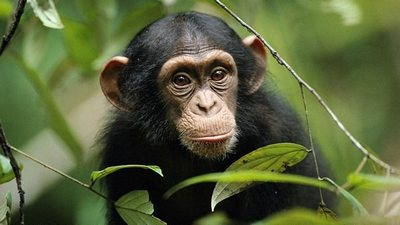

 Наверняка ни для кого не секрет, что долгое время в научных кругах обезьяну считали нашим ближайшим сородичем, и вели происхождение человека от обезьяны. Сейчас же эта научная теория ставится под сомнение, далеко не все ученые считают, что мы, так званные «гомо сапиенс» произошли от обезьян. Впрочем, научные споры на этот счет ведутся до сих пор, но наша статья не об этом, а о тех удивительных существах, братьях наших меньших, которые среди всего разнообразного животного мира планеты Земля, действительно своим строением больше всего похожи на нас, людей. Предлагаю вашему вниманию галерею фотографий галерею фотографий этого прекрасного создания.